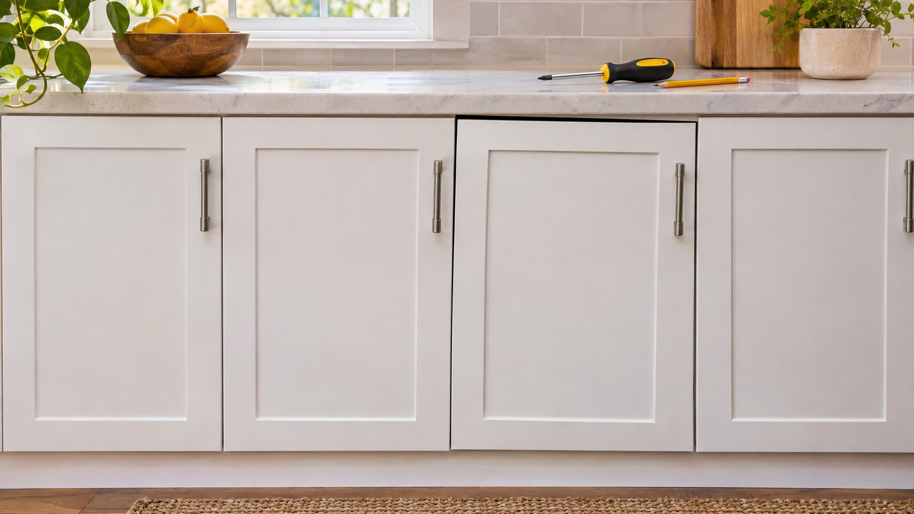
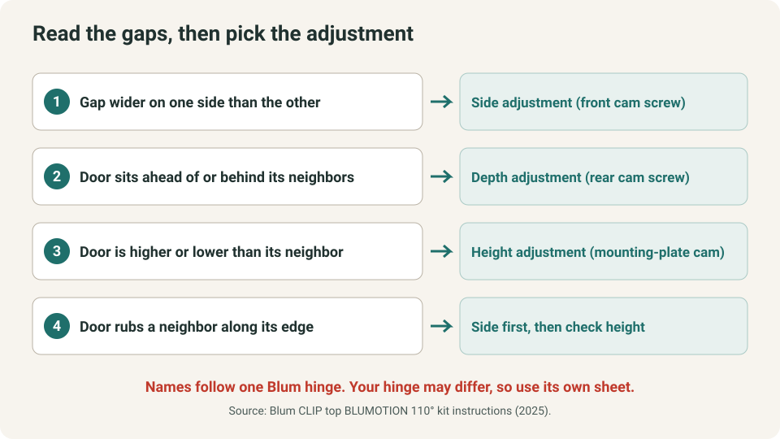
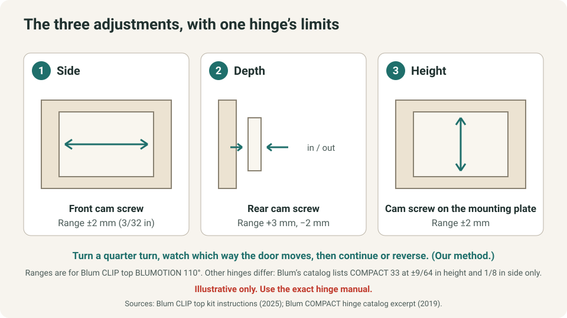
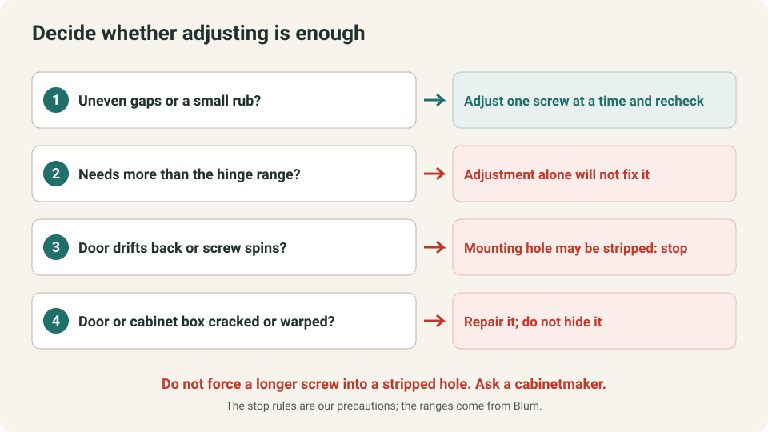

WEEKEND PROJECTS · KITCHEN REPAIR
How to Adjust Kitchen Cabinet Hinges (Gaps, Rubbing and Sag)

A cabinet door that sits crooked, rubs its neighbor or sags is usually a hinge-adjustment job, not a repair. Most modern concealed hinges have three adjustment screws, but which screw does what, and how far it can move, depends on the hinge. This guide uses one maker’s real instruction sheet as the example and shows where other hinges differ.
The quick answer
- Three directions. Side moves the door left or right, depth moves it in or out, and height moves it up or down. On the Blum hinge we opened they are the front cam screw, the rear cam screw and a cam screw on the mounting plate.
- Small ranges. That hinge moves about 2 mm (3/32 inch) side to side and up and down, and +3 mm or −2 mm in depth. Adjustment fixes small errors only.
- Identify your hinge first. Blum’s catalog shows other hinges with different ranges, including one that has side adjustment only.
- Stop if the screw spins or the door drifts back. That points to a damaged mounting hole, not a setting.
Quick plan
| Item | Detail |
|---|---|
| Time | Minutes per door once you know the hinge |
| Tools | A #2 Phillips or #2 POZI driver. Blum recommends the POZI for adjustments. Use a hand driver, not a drill |
| Best for | Uneven gaps or a small rub on sound concealed hinges and doors |
| Stop if | The door or cabinet is cracked or warped, or a mounting hole is stripped |
Step 1: Read the gaps
Close the door and look at the gaps at the top, bottom and sides, and compare them with the neighboring doors. Note where it rubs and whether the face sits ahead of or behind the others.

Look at the hinge and the cabinet too. A door that does not rest on a sound hinge and plate cannot be fixed by turning screws.
Step 2: Identify your hinge
Look for a concealed cup hinge, where a round cup is set into the back of the door and an arm clips or screws onto a plate in the cabinet. Find the maker and model, then use the matching instruction sheet. Blum’s instruction sheets are matched by product code, and apply only to that hinge family.
Families really do differ. Blum’s 2019 catalog excerpt lists one COMPACT hinge with ±1/8 inch of height, ±1/16 inch of side and +3/32 or −1/32 inch of cam depth adjustment, and another, the COMPACT 33, with ±9/64 inch of height and 1/8 inch of side adjustment only. So never assume your hinge has all three.
Step 3: Support the door and use the right driver
- Support the door so its weight is not pulling on the hinge while you adjust.
- Use a hand driver. The Blum sheet calls a #2 Phillips or #2 POZI driver for the adjustments and recommends the POZI.
- Turn only the screw the maker identifies. Do not loosen every screw at once, because some screws hold the mounting plate to the cabinet.
Step 4: Make the three adjustments

- Side. Rotate the front cam screw to increase or decrease the door’s side overlay. Range for that hinge: ±2 mm (3/32 inch).
- Depth. Rotate the rear cam screw to increase or decrease the door gap. Range: +3 mm and −2 mm.
- Height. Rotate the cam screw on the mounting plate to move the door up or down. Range: ±2 mm. The Blum sheet’s printed figure here reads 13/32 inch, which looks like a typo, so trust the 2 mm.
Make one small change, then close the door and look again. Our method for direction: turn a quarter turn, watch which way the door moves, then continue or reverse. The sheets we opened give the ranges but not the direction of each turn for every hinge.
Step 5: Worked example (illustrative)
The door is flush side to side, but its face sits 3 mm ahead of its neighbors. That is a depth problem, so you would use the rear cam screw. For the hinge above, the depth range is +3 mm and −2 mm, so the most you can pull the door inward is 2 mm. Pulling it in the 3 mm you need is not possible, and adjustment alone will not fix it. Check the cabinet and plate position, or ask a cabinetmaker.
Step 6: Decide whether adjusting is enough

- The door drifts back, or a screw spins without gripping. The mounting hole may be stripped. Our precaution: do not force a longer screw into it. Ask a cabinetmaker.
- The gaps cannot be evened out. The door may be warped, or the cabinet box may be out of square. Adjustment will hide it at best.
- The hinge is bent or cracked. Replace it with the same hinge family.
Step 7: Check the result
- Open and close the door several times. The gaps should look even and nothing should rub.
- Check that neighboring doors do not collide.
- If the hinge is soft-close, check it still works. On the Blum hinge, a switch slides toward the hinge arm to deactivate it, the door must be closed once to complete that, and moving it back reactivates it.
- Look again after a day of use. A door that has drifted back points to a loose or damaged mounting point.
Quick win (5 minutes)
Photograph the hinge markings and the gap before you touch anything, and make a pencil mark on the door edge and cabinet. You can return to the starting point if a turn goes the wrong way.
Common mistakes
- Turning screws at random instead of the one for the problem.
- Loosening every screw, including the ones that hold the plate.
- Using a drill, which makes it easy to overtighten.
- Using one maker’s ranges for a different hinge.
- Adjusting a warped door or cabinet instead of repairing it.
- Replacing a hinge with one that does not match the cup size and mounting pattern.
When to call a professional
- The door or cabinet is cracked, or the box is out of square.
- Mounting holes are stripped or the hinge is bent.
- The correction you need is beyond the hinge’s range.
- You cannot identify the hinge or its maker.
FAQ
Which screw moves the door left or right?
It depends on the hinge. On the Blum CLIP top BLUMOTION 110° hinge, it is the front cam screw. Other hinges differ, so use the instruction sheet for yours.
Do all concealed hinges have all three adjustments?
No. Blum’s catalog excerpt shows one COMPACT hinge with side, height and cam depth adjustment and another, the COMPACT 33, with ±9/64 inch of height and side adjustment of 1/8 inch only.
Why does the door keep slipping back?
A loose or damaged mounting point is a likely cause, in our reading, rather than the setting. Ask a cabinetmaker before using a longer screw.
Can I use a longer screw?
The Blum kit supplies #6 × 5/8 inch wood screws and says to pre-drill 1/8 inch holes to a depth of less than 5/8 inch. It says nothing about longer screws, so do not substitute without the maker’s or a cabinetmaker’s word.
How do I turn off soft close?
On the Blum hinge, slide the switch toward the hinge arm and close the door once. Move the switch back to the original position to reactivate it.
Does this apply to exposed hinges?
No. This guide covers concealed cup hinges. Exposed hinges work differently, and neither source we opened covers them.
What this guide assumes
It covers concealed cup hinges on a kitchen cabinet in a typical U.S. home, using one Blum hinge’s instruction sheet as the example. The ranges are for that hinge only, and the “stop” advice is our own precaution. HomeProjectWise has not adjusted these hinges, and we do not endorse a brand or product.
Keep going
- How to fix wobbly furniture for loose screws and joints elsewhere in the home.
- All HomeProjectWise guides for more weekend projects.
Sources and last checked
The Blum kit instructions were opened and read in full on 15 November 2026. The catalog pages were read only as a search excerpt. The first source covers the CLIP top BLUMOTION 110° hinge, and your own hinge’s sheet overrides it.
- Blum, CLIP top BLUMOTION 110° (soft close) hinge kit instructions, H002 (© 2025): https://d2.blum.com/services/BEC003/cme198264_ma_dok_bus_%24sen-us_%24aof_%24v1.pdf
- Blum, COMPACT hinges catalog pages (© 2019), hosted by CabinetParts (excerpt read, not opened in full): https://downloads.cabinetparts.com/auto/BlumCompactHinges.pdf